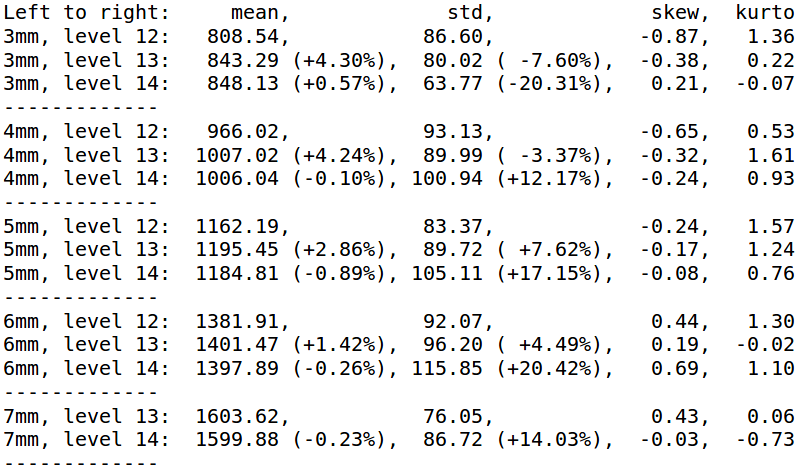

Modeling and simulation of convection-dominated species transfer at rising bubbles
Andre Weiner, weiner@mma.tu-darmstadt.de
First supervisor: Prof. Dr. rer. nat. Dieter Bothe
Second supervisor: Prof. Dr.-Ing. Peter Stephan
Slides available at: andreweiner.github.io/reveal.js/phd_defence.html
Outline
- Effect of underresolved meshes
- Subgrid-scale modeling
- Data-driven modeling
- Hybrid approach for model assessment
- Comparison with experiments
- Summary and outlook
Underresolved meshes
Show how solution changes with resolution
1D scenario
Transfer species (A)

Add picture of concentration field
Interpolation errors
animation
Bulk species (B)
Add picture of concentration field
Product species (P)
Add picture of concentration field
Reaction source term
Add picture of concentration field
Subgrid-scale modeling
three steps(1) Substitute problems
history, mathematical problemSolutions
(2) Reconstruction
old fitting
integral fitting
(3) Correction
Limitations
what if no analytical solution is available? e.g. complex reactions, substitute problem to simple
Data-driven modeling
basic ideaSubstitute problem
setup and data generationSupervised learning
Selecting meaningful features
Correction
Advantages and challenges
Model assessment
How to obtain reference data for
- complex bubble shapes and
- dynamic shape deformation
locally and globally?
Dilemma
Volume of Fluid
- strong deformations
- low computational cost
- low accuracy

Interface Tracking
- small deformations
- high computational cost
- high accuracy
Image: A. Weiner, J. Timmermann, C. Pesci, J.Grewe, M. Hoffmann, M.Schlüter, D.Bothe
Decoupling of two phase flow and species transport
- Two-phase flow simulation (VoF)
- Extraction and approximation of shape and boundary conditions (machine learning)
- Single phase solution (liquid) of momentum and species transport
Two phase flow simulation
Oscillations in VOF data
Shape and BC


Single phase solution

Air bubbles rising in water
Terminal velocity

Velocity distribution

Some statistics
Summary
- high-$Pe$ number problem (boundary layer) ✔
- SGS modeling for 1st order reaction ✔
- SGS modeling for selective reactions (✔)
- Validation with complex and dynamic interfaces (✔)
Outlook
dynamic assessment, 3D, bulk modeling, apply to other fluid dynamical problems, learning from dataTHE END
Thank you for your attention!
Get in touch: weiner@mma.tu-darmstadt.de
Time for discussion ...
Complementary material
Publications
Pendant bubble method
Image by courtesy of David Merker. Measurement apparatus by dataphysics-instruments.